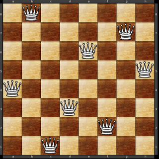

Algorismes de cerca
Introducció
En l'apartat anterior hem vist com treballar amb diferents estructures de dades i com estes poden ser útils per a la resolució de problemes. En este apartat, ens centrarem en els algorismes de cerca, que són fonamentals per explorar les dades que tenim i trobar solucions a problemes complexos. En funció del tipus de problema a resoldre triarem unes estructures de dades i uns algorismes de cerca. Per podem triar bé, necessitem conéixer les característiques de cada algorisme, com es comporten en diferents situacions, quines són els seus avantatges i inconvenients, i per a quins tipus de problemes són més adequats.
Resolució de problemes
Com que tot el que anem a veure s'utilitza en la resolució de problemes, és important que tinguem clar què és un problema i com es pot representar. En Este apartat, definirem què és un problema i com es pot representar mitjançant un espai d'estats. A més, veurem com els algorismes de cerca ens ajuden a explorar Este espai d'estats per trobar solucions. Més endavant també analitzarem altres tipus de cerques que no treballen estrictament amb espais d'estats.
Què és un problema?
En el context de la intel·ligència artificial i la informàtica, un problema es pot definir com una situació inicial juntament amb una condició objectiu que volem assolir mitjançant una seqüència d'accions. Estes accions ens portaran des de la situació inicial fins a la situació objectiu. No tots els problemes són iguals, però en general és una bona manera de començar a pensar en la resolució de problemes. Ja en veurem d'altres.
Un problema d'este tipus sol estar compost de quatre elements principals:
- L'estat inicial: La configuració del sistema en el punt de partida.
- L'objectiu o estat final: La configuració que volem assolir.
- Les accions o operadors: Les possibles transicions que permeten moure's d'un estat a un altre.
- Les restriccions: Les condicions que les solucions han de complir.
L'espai d'estats
L'espai d'estats és una representació abstracta de totes les possibles configuracions que poden assolir-se a partir de la situació inicial mitjançant les accions disponibles. Cada estat representa una configuració única i les transicions entre estats es defineixen mitjançant les accions.
Este espai es pot visualitzar com un graf on cada node representa un estat i cada aresta representa una transició entre estats. L'objectiu de la cerca, en Este tipus de problemes, és trobar un camí en el graf que ens permeta anar de l'estat inicial a l'estat objectiu.
Exemples d'espais d'estats poden ser:
- El tauler d'un joc d'escacs, on cada posició legal de les peces representa un estat, i cada moviment legal d'una peça és una transició
- Un laberint, on cada cel·la és un estat i els camins entre cel·les són les transicions.
- Un problema de ruta, on cada ubicació geogràfica és un estat i les carreteres són les transicions.
Per exemple, en el problema del trencaclosques de les 8 reines, cada estat és una configuració de les reines sobre el tauler, i les accions són moviments de les reines que no violen les regles del joc.

El problema de les 8 reines és un problema clàssic d'intel·ligència artificial on l'objectiu és col·locar 8 reines en un tauler d'escacs de manera que cap reina puga atacar a una altra. Això implica que no poden compartir la mateixa fila, columna o diagonal.
Algorismes de cerca en l'espai d'estats
Els algorismes de cerca s'utilitzen per explorar l'espai d'estats amb l'objectiu de trobar una seqüència d'accions que ens porten a la situació objectiu. Estos algorismes poden ser classificats en cerques no informades i cerques informades o heurístiques, depenent de si utilitzen o no informació addicional per guiar la cerca.
Els algorismes de cerca en l'espai d'estats poden ser de diferents tipus, depenent de com exploren el graf d'estats. Alguns dels algorismes més comuns inclouen:
- Cerca en amplària: Explora tots els nodes a un nivell de profunditat abans de passar als nodes del següent nivell.
- Cerca en profunditat: Explora tant com siga possible al llarg de cada branca abans de retrocedir.
- Cerca en profunditat limitada: Similar a la cerca en profunditat, però amb un límit de profunditat.
- Cerca en profunditat iterativa: Realitza cerques en profunditat amb límits successivament creixents.
- Cerca de cost uniforme: Explora els nodes en funció del cost acumulat des de l'inici.
- Cerca A*: Utilitza una funció de cost combinada que inclou tant el cost acumulat com una estimació heurística del cost restant.
Anirem veient cadascun d'estos algorismes en detall, incloent els seus avantatges i inconvenients, així com exemples d'aplicació. Ara, de moment, anem a parlar més a fons dels conceptes que hem introduït abans: les cerques poden ser informades o no informades. Podríem dir que les no informades són com anar a cegues provant alternatives, mentre que les informades utilitzen informació addicional per guiar d'alguna manera la cerca cap a la solució.
 Cerca no informada
Cerca no informada
 Cerca informada
Cerca informada
Cerques no informades
Les cerques no informades, també conegudes com cerques a cegues, no utilitzen informació addicional sobre el problema més enllà de les definicions bàsiques dels estats i les transicions. Estes cerques exploren l'espai d'estats de manera sistemàtica. Inclouen la major part dels algorismes que hem enumerat abans:
- Cerca en amplària
- Cerca en profunditat
- Cerca en profunditat limitada
- Cerca en profunditat iterativa
Les cerques no informades són independents del problema en el sentit que no fan ús de cap informació específica sobre la distribució dels estats ni sobre l'objectiu final. Això les fa generals però sovint ineficients, ja que poden explorar moltes parts de l'espai d'estats que no són rellevants per trobar la solució.
Cerca en amplària
La cerca en amplària explora tots els nodes a un determinat nivell de profunditat abans de passar als nodes del següent nivell. Esta tècnica garanteix trobar la solució més curta però pot ser ineficient pel que fa a l'ús de memòria.
Este algorisme funciona utilitzant una cua, afegint els nodes fills d'un node abans d'expandir el següent node de la cua. És complet, és a dir, troba una solució si n'hi ha una, i és òptim si el cost de cada pas és igual. La principal limitació és el seu alt requeriment de memòria, especialment en espais d'estats amb un gran factor de ramificació.

Estats repetits
En la cerca en amplària, és important gestionar els estats repetits per evitar l'exploració innecessària de nodes ja visitats. Això es pot fer mantenint una llista de nodes ja explorats (CLOSED) i una llista de nodes pendents d'explorar (OPEN). Quan es genera un nou node, es comprova si ja està en CLOSED o OPEN abans d'afegir-lo a OPEN.
La llista OPEN se pot implementar com una cua de prioritats. S'extrau l'element de la cua amb la màxima prioritat d'acord amb una funció f(n) que ens torna un valor associat a cada node n. En la cerca en amplària, esta funció pot ser simplement la profunditat del node, ja que es vol explorar primer els nodes més propers a l'arrel. En una cerca no informada, esta funció no utilitza cap informació addicional sobre l'objectiu. En la cerca en amplària la funció f(n) ens diu simplement quina és la profunditat del node perquè no tenim més informació sobre el seu cost. Ja veurem com podem aplicar-la en cerques informades.
Veiem com funcionaria este procés amb el següent pseudocodi:
function GRAPH-SEARCH (problema) return // una solució o un error (no existeix solució)
Inicialitzar la llista OPEN amb l'estat inicial del problema
Inicialitzar la llista CLOSED a buit
do
if OPEN està buida
then return fallada
node <- pop (llista OPEN)
afegir node a la llista CLOSED
if node = estat final
then return solució node
generar fills de node
per a cada fill n de node :
aplicar f(n) en el cas que tots els nodes no tinguen el mateix cost
if n no està en CLOSED then
if n no està en OPEN o (n està repetit en OPEN i f(n) és millor que el valor del node en OPEN)
then inserir n en ordre creixent de f(n) en OPEN*
else si f(n) és millor que el valor del node repetit en CLOSED
then escollir entre re-expandir n (inserir-ho en OPEN) o descartar-lo
enddo
Si estem interessats a trobar únicament la primera solució, es poden eliminar els repetits de la llista OPEN i CLOSED sense necessitat de tornar a expandir-los
Cerca en profunditat
La cerca en profunditat explora tant com siga possible al llarg de cada branca abans de retrocedir. Este mètode utilitza menys memòria però pot no trobar la solució més curta i pot caure en cicles infinits si no es controla.
L'algorisme utilitza una pila per gestionar els nodes a explorar, afegint els fills del node actual al principi de la pila. És més eficient en termes de memòria comparat amb la cerca en amplària, però pot explorar camins molt llargs que no condueixen a una solució, especialment en espais d'estats amb molta profunditat.
Pseudocodi:
Cerca_en_profunditat(estat_inicial):
crear pila buida S
afegir estat_inicial a S
mentre S no està buida:
estat_actual = treure de S
si estat_actual és l'estat_objectiu:
retornar el camí a estat_actual
per cada veí de estat_actual:
si veí no està visitat:
marcar veí com visitat
afegir veí a S
retornar cap_solució

Cerca en profunditat amb backtracking
La cerca en profunditat amb backtracking és una variant de la cerca en profunditat que permet gestionar l'exploració de l'espai d'estats de manera més eficient. Este mètode utilitza una pila per gestionar els nodes a explorar i una llista per emmagatzemar els nodes visitats. Quan es troba una solució, es retrocedeix per trobar altres solucions possibles.
Esta tècnica és útil en problemes on hi ha múltiples solucions possibles o on es vol trobar la millor solució. Per exemple, en el problema de les 8 reines, es poden trobar totes les solucions possibles amb Este mètode.
Pseudocodi:
Cerca_en_profunditat_backtracking(estat_inicial):
crear pila buida S
crear llista buida visitats
afegir estat_inicial a S
mentre S no està buida:
estat_actual = treure de S
si estat_actual és l'estat_objectiu:
afegir estat_actual a solucions
per cada veí de estat_actual:
si veí no està en visitats:
afegir veí a visitats
afegir veí a S
retornar solucions
Cerca en profunditat limitada
La cerca en profunditat limitada és una variant de la cerca en profunditat que imposa un límit a la profunditat màxima que es pot explorar. Això ajuda a evitar caure en cicles infinits i a reduir el temps d'execució en espais d'estats molt grans. Ara bé, Este límit pot impedir trobar una solució si Esta es troba més enllà de la profunditat imposada.
La cerca en profunditat limitada és útil quan sabem que la solució es troba dins d'un cert nombre de passos des de l'estat inicial. El principal desavantatge és que si la solució està més enllà del límit establert, l'algorisme no la trobarà.
Pseudocodi:
Cerca_en_profunditat_limitada(estat_inicial, límit):
crear pila buida S
afegir estat_inicial a S amb profunditat 0
mentre S no està buida:
(estat_actual, profunditat_actual) = treure de S
si estat_actual és l'estat_objectiu:
retornar el camí a estat_actual
si profunditat_actual < límit:
per cada veí de estat_actual:
si veí no està visitat:
marcar veí com visitat
afegir veí a S amb profunditat profunditat_actual + 1
retornar cap_solució
Cerca en profunditat iterativa
La cerca en profunditat iterativa combina els avantatges de la cerca en amplària i en profunditat. Realitza cerques en profunditat amb límits successivament creixents, assegurant que es trobarà la solució més curta.
Este mètode és complet i òptim com la cerca en amplària, però amb millors requeriments de memòria. Funciona realitzant repetides cerques en profunditat, incrementant el límit de profunditat cada vegada fins que es troba la solució. És especialment útil en espais d'estats molt grans.
Pseudocodi:
Cerca_en_profunditat_iterativa(estat_inicial):
límit = 0
mentre cert:
resultat = Cerca_en_profunditat_limitada(estat_inicial, límit)
si resultat no és cap_solució:
retornar resultat
límit = límit + 1
Cerques informades
Les cerques informades o heurístiques utilitzen informació addicional per guiar la cerca cap a la solució. Estes cerques són més eficients que les no informades perquè en lloc d'anar a cegues utilitzen una funció heurística que estima el cost o la distància des d'un estat donat fins a l'objectiu. Això permet que l'algorisme es concentre en les branques més prometedores de l'espai d'estats, reduint el nombre de nodes a explorar i millorant l'eficiència de la cerca.
Què és la heurística?
Una heurística és una funció que estima el cost o la distància des d'un estat donat fins a la situació objectiu. Les cerques heurístiques utilitzen Estes funcions per guiar la cerca cap a la solució de manera més eficient.
Les heurístiques es basen en coneixement addicional sobre el problema (per això són cerques informades) i poden fer que la cerca siga molt més eficient. Per exemple, en un problema de trobar el camí més curt en un mapa, una heurística pot ser la distància en línia recta des de l'estat actual fins a l'objectiu.
Heurística admissible
Una heurística es considera admissible si mai sobreestima el cost de trobar la solució. Això assegura que la cerca guiada per Esta heurística trobarà sempre una solució òptima. Per a qualsevol estat, la funció heurística sempre retorna un valor que és igual o menor que el cost real d'arribar a l'objectiu. Les heurístiques admissibles són essencials per garantir que els algorismes de cerca, com A*, troben la millor solució possible.
Heurística consistent
Una heurística és consistent si, per a cada estat, la seua estimació no excedeix el cost d'arribar a un estat veí més el cost estimat des d'Este estat veí fins a la situació objectiu. Les heurístiques consistents garanteixen que la cerca A* siga òptima i completa.
La consistència implica que la funció heurística h compleix la següent condició per a qualsevol estat n i qualsevol successor n' de n: h(n) <= c(n, n') + h(n'), on c(n, n') és el cost d'anar de n a n'. Esta propietat assegura que una vegada que un node és expandit, el seu cost total no canviarà.
Cerca A*
L'algorisme A* és una tècnica de cerca heurística que utilitza una funció de cost combinada que inclou tant el cost acumulat des de l'inici com l'estimació heurística fins a la situació objectiu. Esta combinació permet a l'algorisme trobar solucions òptimes de manera eficient.
A* utilitza una funció de cost f(n) = g(n) + h(n), on g(n) és el cost des de l'estat inicial fins a n, i h(n) és l'estimació heurística del cost des de n fins a l'objectiu. Este algorisme expandeix el node amb el menor valor de f(n), garantint així que trobi el camí més curt si h és admissible i consistent.
Pseudocodi:
Cerca_A*(estat_inicial, estat_objectiu, heurística):
crear cua buida de prioritat Q
afegir estat_inicial a Q amb prioritat 0
g(estat_inicial) = 0
mentre Q no està buida:
estat_actual = treure de Q
si estat_actual és l'estat_objectiu:
retornar el camí a estat_actual
per cada veí de estat_actual:
cost = g(estat_actual) + cost(estat_actual, veí)
si veí no està en Q o cost < g(veí):
g(veí) = cost
f(veí) = g(veí) + heurística(veí, estat_objectiu)
afegir veí a Q amb prioritat f(veí)
retornar cap_solució
Distancia de Manhattan
La distància de Manhattan és útil en problemes on els moviments només es poden fer en direccions horitzontals i verticals, com en un tauler de joc o un mapa de ciutat.
La distància Manhattan, també coneguda com a "distància taxicab" o "distància de bloc de ciutat", es calcula com la suma de les diferències absolutes entre les coordenades de dos punts en una quadrícula. És útil quan es pot moure només horitzontalment i verticalment, com és el cas en una ciutat amb carrers ortogonals com Manhattan, d'ahí el seu nom.
En un mapa bidimensional, la distància de Manhattan entre dos punts (x1, y1) i (x2, y2) es calcula com |x1 - x2| + |y1 - y2|. Esta heurística és admissible i consistent, ja que sempre subestima el cost real i compleix la condició de consistència.
Este càlcul es pot generalitzar per a qualsevol dimensió, on simplement es sumen les diferències absolutes de les coordenades corresponents de cada dimensió.
A diferència de la distància euclidiana, que mesura la distància més curta en línia recta entre dos punts, la distància Manhattan segueix camins paral·lels a les coordenades, com en un sistema de carrers d'una ciutat. Esta distància és molt utilitzada en aplicacions de ciències de dades, reconeixement de patrons i en jocs com el "Snake", on els moviments són limitats a direccions ortogonals.

Conclusió
| Algorisme | Aplicació | Complexitat Temporal | Avantatges | Inconvenients |
|---|---|---|---|---|
| BFS (Breadth-First Search) | - Cerca en amplària per grafos no ponderats | O(V + E) | - Troba el camí més curt en grafos no ponderats | - No pot manejar grafos ponderats |
| - Detecció de cicles en grafos no dirigits | - Simple d'implementar | - Pot ser costós en termes de memòria | ||
| - Cerca de camins mínims en laberints | - Garanteix trobar la solució més curta en grafos no ponderats | - Requereix més memòria que DFS | ||
| - Generació d'arbre mínim en grafos no ponderats | ||||
| DFS (Depth-First Search) | - Cerca en profunditat per detectar cicles o components connectats | O(V + E) | - Menys memòria que BFS | - No garanteix camí més curt |
| - Ordenació topològica | - Apte per a recórrer tot el grafo | - Pot quedar-se en bucles infinits sense mecanismes de prevenció | ||
| - Cerca en puzzles com el Sudoku o problemes de coloració | - Funciona bé amb profunditats limitades | - Pot trobar solucions subòptimes en grafos grans | ||
| - Detecció de connexions fortament connectades | ||||
| Profunditat Iterativa | - Cerca combinant els avantatges de DFS i BFS | O(b^d), on b és el factor de ramificació i d la profunditat del node | - Eficient en espai com DFS, però més complet com BFS | - Pot explorar nodes repetidament |
| - Resolució de problemes on no es coneix la profunditat de la solució | - No requereix estimar la profunditat màxima | - Més lent que BFS per a grafos grans | ||
| - Cerca de solucions en problemes de jocs (com damuntes o escacs) | - Troba solucions en jocs on la profunditat òptima no es coneix | - Exploració repetida de nodes | ||
| A* | - Cerca del camí òptim utilitzant una funció heurística | O(b^d), on b és el factor de ramificació i d la profunditat del node | - Eficient si es tria una bona heurística | - Difícil de definir una heurística adequada |
| - Cerca de camí més curt en problemes de navegació | - Troba el camí més curt si la heurística és admissible | - Pitjor rendiment amb heurístiques mal dissenyades | ||
| - Cerca de camins en mapes amb obstacles (per exemple, en robots) | - Molt utilitzat en IA i videojocs per trobar el camí òptim | - Més costós en termes de càlcul que BFS o DFS | ||
| - Resolució de problemes de rutes òptimes en logística |
Llegend:
- V: Nombre de nodes (vèrtexs).
- E: Nombre d'arestes (arestes).
- b: Factor de ramificació.
- d: Profunditat del node objectiu.
Cerca en planificació
La cerca en planificació és un enfocament que utilitza algorismes de cerca per resoldre problemes de planificació, on l'objectiu és trobar una seqüència d'accions que porte a un estat objectiu des d'un estat inicial. Este tipus de cerca és útil en àmbits com la robòtica, la logística i els jocs, on es requereix una seqüència d'accions per assolir un objectiu.
La diferència d'una cerca en planificació respecte a una cerca en un espai d'estats com les que hem vist és que ací es busca una seqüència d'accions que porte a l'estat objectiu, mentre que en una cerca en un espai d'estats es busca un camí entre dos estats. Això implica que els algorismes de cerca en planificació han de tenir en compte les accions disponibles i com Estes afecten l'estat del sistema.
En la cerca en planificació es poden utilitzar diferents algorismes de cerca com els que hem vist anteriorment (BFS, DFS, A*), però adaptats per treballar amb accions i estats.
Cerca en entorns d'incertesa
La cerca en entorns d'incertesa és un enfocament que s'utilitza quan els estats del sistema no són totalment coneguts o quan hi ha una certa probabilitat associada a les accions. Este tipus de cerca és comú en problemes on les accions poden tenir resultats aleatoris o quan es treballa amb informació incompleta.
En Estos casos, els algorismes de cerca han d'adaptar-se per gestionar la incertesa i prendre decisions basades en probabilitats. Això pot implicar l'ús de tècniques com la programació dinàmica, els arbres de decisió o els mètodes de Monte Carlo. També es poden utilitzar algorismes de cerca adaptats per treballar amb entorns estocàstics, com el Cerca Minimax o el Cerca Expectimax, que són útils en jocs i situacions on les accions tenen resultats incerts.
En un entorn d'incertesa on la cerca es probabilística (les transicions d'estats no són deterministes), pot ser útil aplicar el Teorema de Bayes per actualitzar les creences sobre l'estat del sistema a mesura que es reben noves observacions. Això permet ajustar les estratègies de cerca i millorar la presa de decisions en situacions on la informació és incompleta o incerta.
Ara aplicarem tots estos conceptes i tècniques en la resolució de problemes pràctics.